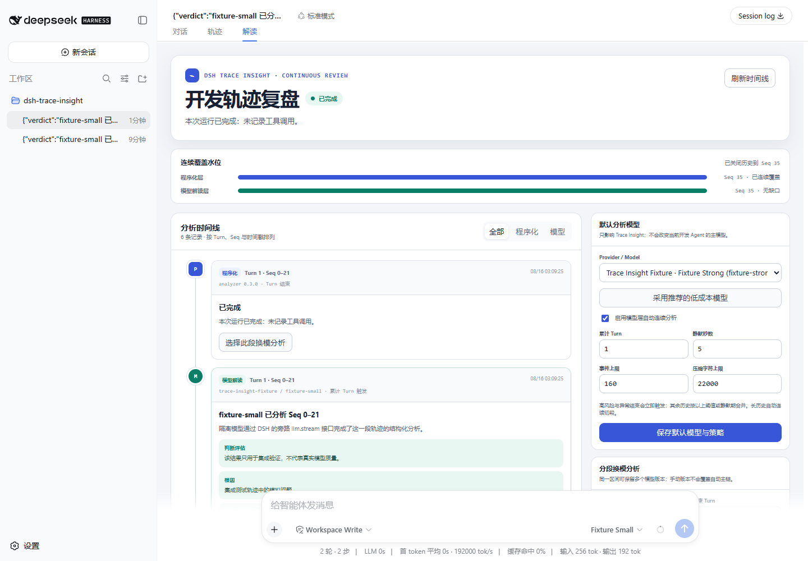

DSH Trace Insight 0.3.0
真实 DeepSeek Harness 0.1.0-rc.6 隔离浏览器验收截图：连续双层覆盖、Turn/Seq 时间线、默认模型与分段换模运维。截图中的模型为本地 fixture，只验证集成行为，不代表真实模型质量。

真实 DeepSeek Harness 0.1.0-rc.6 隔离浏览器验收截图：连续双层覆盖、Turn/Seq 时间线、默认模型与分段换模运维。截图中的模型为本地 fixture，只验证集成行为，不代表真实模型质量。
